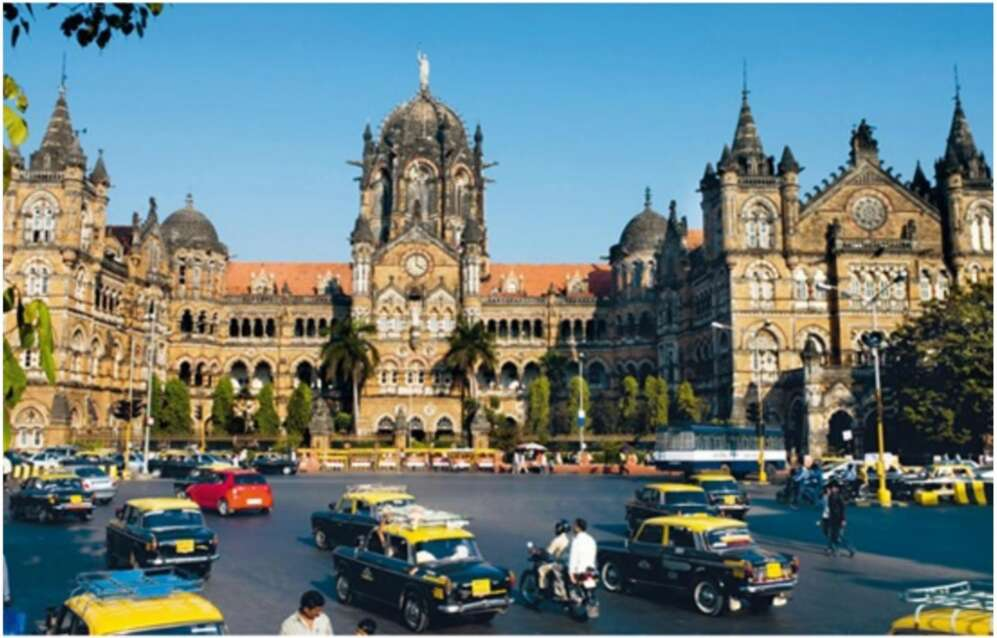

~ eS ee ae et ne ee al ; ~ | 28. The Chhatrapati Shivaji train station in Mumbai. It began its life as Victoria Station, Bombay. The British built it in the Neo-Gothic style that was popular in late nineteenthcentury Britain. A Hindu nationalist government changed the names of both city and station, but showed no appetite for razing such a magnificent building, even if it was built by foreign oppressors. How many Indians today would want to call a vote to divest themselves of democracy, English, the railway network, the legal system, cricket and tea on the grounds that they are imperial legacies? And if they did, wouldn’t the very act of calling a vote to decide the issue demonstrate their debt to their former overlords?
